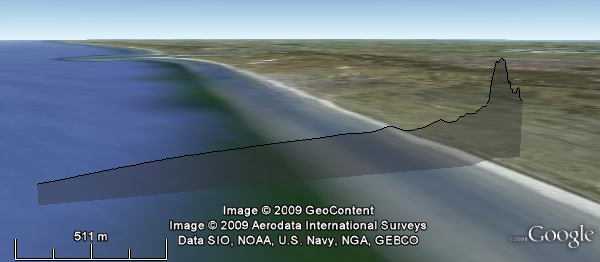
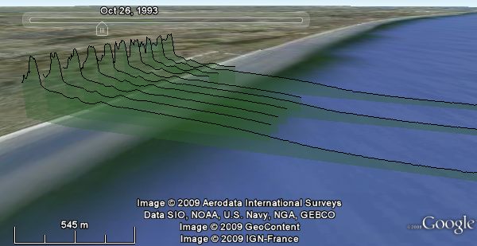

Extract data from netCDF database
extract lat, lon, z, data from the netCDF database. See the read JarKus tutorial if this is new to you.
url = jarkus_url; id = nc_varget(url,'id'); transect_nr = find(id==8007000)-1; year = 1970 + floor(nc_varget(url,'time')/365); year_nr = find(year == 1993)-1; lat = nc_varget(url,'lat',[transect_nr,0],[1,-1]); lon = nc_varget(url,'lon',[transect_nr,0],[1,-1]); z = nc_varget(url,'altitude',[year_nr,transect_nr,0],[1,1,-1]);
Error using netcdflib
The NetCDF library encountered an error during execution of 'open' function - 'I/O failure (NC_EIO)'. If the data source was an OPeNDAP URL, see the OPeNDAP Troubleshooting section in the Users Guide.
Error in netcdf.open (line 60)
[varargout{:}] = netcdflib ( 'open', filename, varargin{1} );
Error in nc_varget_tmw>varget_nc (line 21)
ncid=netcdf.open(ncfile,'NOWRITE');
Error in nc_varget_tmw (line 5)
[data,info] = varget_nc(ncfile,varname,varargin{:});
Error in nc_vargetr (line 38)
[data,info] = nc_varget_tmw(ncfile,varname,varargin{:});
...Check the data
we will check the data with matlab line:
line(lat,lon,z)
view([-67 32])
grid on
Since there are NaN values in the data, not al datapoints are connected.
line(lat,lon,z,'lineStyle','none','marker','.','color',[1 0 0])
We can overcome this problem by linear interpolation of z to xRSP.
xRSP = nc_varget(url,'cross_shore');
not_nan = ~isnan(z);
zi = interp1(xRSP(not_nan),z(not_nan),xRSP);
we will check the data again with matlab line:
clf; line(lat,lon,zi)
view([-67 32])
grid on
Make line plot
This works as expected, so now we will plot the data. We will exagerate the z data, by adding 20 and multiplying by 5, using the zScaleFun;
fname = 'Jarkus.kml'; KMLline(lat,lon,zi,'fileName',fname,'zScaleFun',@(z)(z+20)*5);

Animation in time
Get altitude for multiple years
z = nc_varget(url,'altitude',[1,transect_nr,0],[-1,1,-1]);
interpolate z
zi = nan(size(z)); for yy = 1:size(z,1) not_nan = ~isnan(z(yy,:)); zi(yy,:) = interp1(xRSP(not_nan),z(yy,not_nan),xRSP); end
We must provide lat and lon data for every entry of z;
lat = repmat(lat,size(z,1),1); lon = repmat(lon,size(z,1),1);
An we must get the times.
timeIn = datenum(year,1,1); timeOut = datenum(year+1,1,1); KMLline(lat',lon',zi','timeIn',timeIn,'timeOut',timeOut,... 'fileName',fname,'zScaleFun',@(z)(z+20)*5);
Multiple animated transects
Finally we can also plot multiple jarkus transects at once. We will start from the beginning, with querying the data
no_of_transects = 10; no_of_years = 15; url = jarkus_url; id = nc_varget(url,'id'); start_transect = find(id==8007000)-1; year = 1970 + floor(nc_varget(url,'time')/365); start_year = find(year == 1990)-1; lat = nc_varget(url,'lat',[start_transect,0],[no_of_transects,-1]); lon = nc_varget(url,'lon',[start_transect,0],[no_of_transects,-1]); z = nc_varget(url,'altitude',... [start_year,start_transect,0],... [no_of_years,no_of_transects,-1]); year = 1970 + floor(nc_varget(url,'time',start_year,no_of_years)/365); xRSP = nc_varget(url,'cross_shore');
Interpolation of z, notice the use of squeeze.
zi = nan(size(z)); for yy = 1:no_of_years for nn = 1:no_of_transects not_nan = squeeze(~isnan(z(yy,nn,:))); zi(yy,nn,:) = interp1(xRSP(not_nan),squeeze(z(yy,nn,not_nan)),xRSP); end end
KMLline can not handle 3D inputs, so wil will have to put all the data in a 2D matrix. This requires some careful reshaping, to make sure the right lat/lon, z and time information are matched.
- First step is expanding lat and lon to the same size as z
lat2 = nan(size(z)); lon2 = nan(size(z)); for yy = 1:no_of_years lat2(yy,:,:) = lat; lon2(yy,:,:) = lon; end
- Then we reshape the data to a 2D matrix
lat2 = reshape(lat2,no_of_years*no_of_transects,[]); lon2 = reshape(lon2,no_of_years*no_of_transects,[]); zi = reshape(zi ,no_of_years*no_of_transects,[]);
- Time data also has to be reshaped
year = repmat(year,no_of_transects,1)'; timeIn = datenum(year,1,1); timeOut = datenum(year+1,1,1);
- And finally we can call KMLline
KMLline(lat2',lon2',zi','timeIn',timeIn,'timeOut',timeOut,... 'zScaleFun',@(z) (z+20)*5,'fileName',fname);
